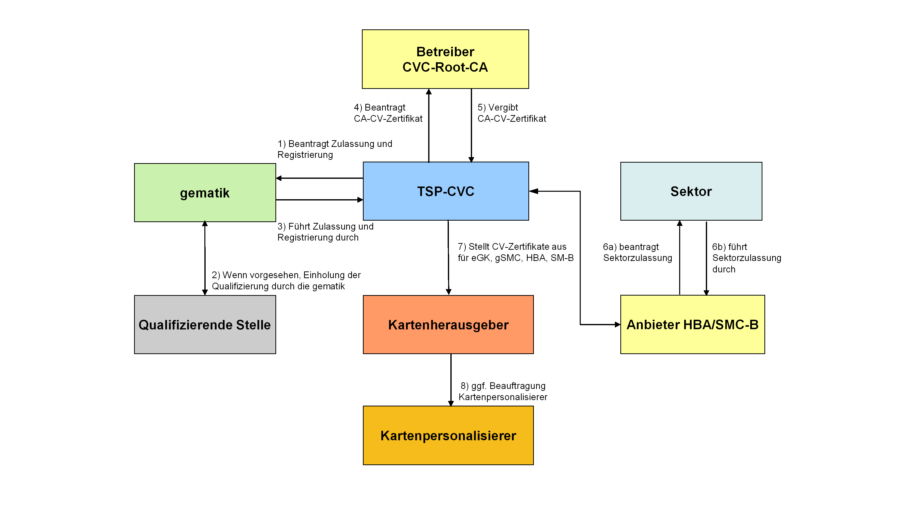

Elektronische Gesundheitskarte und Telematikinfrastruktur
Spezifikation
Trust Service Provider CVC
| Version | 1.14.2 |
| Revision | 571866 |
| Stand | 01.09.2022 |
| Status | freigegeben |
| Klassifizierung | öffentlich |
| Referenzierung | gemSpec_CVC_TSP |
Änderungen zur Vorversion
Anpassungen des vorliegenden Dokumentes im Vergleich zur Vorversion können Sie der nachfolgenden Tabelle entnehmen.
Dokumentenhistorie
| Version | Stand | Grund der Änderung, besondere Hinweise | Bearbeitung |
|---|---|---|---|
| 1.0.0 | Einarbeitung Kommentierung Gesellschafter | gematik | |
| 1.1.0 | Einarbeitung Kommentare aus der übergreifenden Konsistenzprüfung | gematik | |
| 1.2.0 | Überarbeitung anhand interner Änderungsliste (Fehlerkorrekturen, Inkonsistenzen), Kommentierung Gesamtpaket | gematik | |
| 1.3.0 | 18.12.13 | Einarbeitung Kommentare Änderungsliste | gematik |
| 1.4.0 | 21.02.14 | Losübergreifende Synchronisation | gematik |
| 1.5.0 | 17.04.14 | Die Anforderung TIP-A-2692 wurde neu formuliert | gematik |
| 1.6.1 | 26.05.16 | Anpassungen zum Online-Produktivbetrieb (Stufe 1) | gematik |
| 1.7.0 | 24.08.16 | Einarbeitung weiterer Kommentare | gematik |
| 1.8.0 | 28.10.16 | Aufnahme SMC-B für Organisationen der Gesellschafter, Anpassungen gemäß Änderungsliste | gematik |
| 1.8.1 | 21.04.17 | P14.9 | gematik |
| 1.9.0 |
14.05.18 |
Einarbeitung von P15.4 |
gematik |
| 1.10.0 | 26.10.18 | Einarbeitung von P15.9 | gematik |
| 1.11.0 |
18.12.18 |
Einarbeitung von P15.11 und P17.1 |
gematik |
| 1.12.0 | 15.05.19 | Einarbeitung von P18.1 | gematik |
| 1.13.0 | 30.06.20 | Anpassungen gemäß Änderungsliste P22.1 | gematik |
| 1.14.0 | 30.06.21 | Einarbeitung gemF_gSMC-K_Laufzeitverlängerung | gematik |
| 1.14.1 | 21.01.22 | Einarbeitung CI_Maintenance_21.2: Aktualisierung Tabellenverweis für die Anforderung TIP1-A_2568-01. | gematik |
| 1.14.2 | 01.09.22 | Einarbeitung CI_Maintenance_22.4: Aktualisierung Tabellenverweis für Tabelle Tab_PKI_254. | gematik |
Die vorliegende Spezifikation definiert fachliche, betriebliche und personelle Anforderungen an den Produkttyp Trust Service Provider CVC (TSP-CVC) und stellt darüber hinaus Sicherheitsanforderungen hinsichtlich Konzeption und Betrieb einer CVC-CA. Es werden übergreifende Festlegungen sowie Anforderungen an die Schnittstellen zum Erhalt eines CVC-CA-Zertifikates durch die CVC-Root-CA bzw. zur Ausgabe von CV-Zertifikaten an einen Kartenherausgeber oder an einen von ihm benannten Dritten beschrieben.
Das Dokument ist maßgeblich für Trust Service Provider CVC, Anbieter einer CVC-CA sowie Kartenpersonalisierer und Kartenherausgeber.
Dieses Dokument enthält normative Festlegungen zur Telematikinfrastruktur des Deutschen Gesundheitswesens. Der Gültigkeitszeitraum der vorliegenden Version und deren Anwendung in Zulassungsverfahren wird durch die gematik GmbH in gesonderten Dokumenten (z.B. Dokumentenlandkarte, Produkttypsteckbrief, Leistungsbeschreibung) festgelegt und bekannt gegeben.
Schutzrechts-/Patentrechtshinweis
Die nachfolgende Spezifikation ist von der gematik allein unter technischen Gesichtspunkten erstellt worden. Im Einzelfall kann nicht ausgeschlossen werden, dass die Implementierung der Spezifikation in technische Schutzrechte Dritter eingreift. Es ist allein Sache des Anbieters oder Herstellers, durch geeignete Maßnahmen dafür Sorge zu tragen, dass von ihm aufgrund der Spezifikation angebotene Produkte und/oder Leistungen nicht gegen Schutzrechte Dritter verstoßen und sich ggf. die erforderlichen Erlaubnisse/Lizenzen von den betroffenen Schutzrechtsinhabern einzuholen. Die gematik GmbH übernimmt insofern keinerlei Gewährleistungen.
Nicht Bestandteil des vorliegenden Dokumentes sind die Festlegungen zu den Themenbereichen
Anforderungen als Ausdruck normativer Festlegungen werden durch eine eindeutige ID sowie die dem RFC 2119 [RFC2119] entsprechenden, in Großbuchstaben geschriebenen deutschen Schlüsselworte MUSS, DARF NICHT, SOLL, SOLL NICHT, KANN gekennzeichnet.
Sie werden im Dokument wie folgt dargestellt:
<AFO-ID> - <Titel der Afo>
Text / Beschreibung
[<=]
Dabei umfasst die Anforderung sämtliche zwischen Afo-ID und der Textmarke angeführten Inhalte.
Dieses Dokument enthält Anforderungen, welche sich an unterschiedliche Kartentypen richten. Dabei unterscheiden sich die Adressaten dieser Anforderungen je nach Kartentyp. Daher wird der Adressat generisch als Herausgabeverantwortlicher bezeichnet und dieser Begriff für die unterschiedlichen Kartentypen wie folgt definiert:
Für die CV-Zertifikate, die im Rahmen der Telematikinfrastruktur zum Einsatz kommen, wird eine CVC-PKI mit zweistufiger CA-Hierarchie umgesetzt (vgl. [gemKPT_PKI_TIP#5.2]). Die spezifischen CV-Zertifikate, die in einer eGK, einem HBA oder in einem Sicherheitsmodul (SM-B, gSMC) eingebracht werden, werden dabei durch einen Trust Service Provider für CV-Zertifikate (TSP-CVC) erzeugt. In der Hierarchie für CV-Zertifikate ist der TSP-CVC eine CA der zweiten Ebene, er wird im Folgenden auch mit „CVC-CA“ bezeichnet. Die CV-Zertifikate des TSP-CVC werden durch die übergeordnete CVC-Root-CA erzeugt und durch diese verteilt.
Für die Kartengeneration 2 wurden die CV-Zertifikate auf ECC-basierte Kryptographie umgestellt. Eine Cross-Zertifizierungzwischen zwei Zertifizierungsstellen RSA-basierten (G1) und ECC-basierten CVC-PKI (G2) besteht nicht
Die Grundlagen und die Hierarchie der PKI für CV-Zertifikate sind in [gemKPT_PKI_TIP#5] beschrieben. Das zugehörige Vertrauensmodell wird in Kapitel 2.3.6 ebenfalls erläutert. Anforderungen an die Zertifikatsprofile sowie an die Prüfung von CV-Zertifikaten sind in [gemSpec_PKI] in den Kapiteln 6.7 (Zertifikatsprofile) sowie in 8.8 (Zertifikatsprüfung) beschrieben.
Die Funktion einer CVC-CA kann beispielsweise von Kartenpersonalisierern, TSP-X.509 oder den Kartenherausgebern selber übernommen werden. Diese CAs der zweiten Ebene arbeiten immer im Auftrag der für die Kartenherausgabe verantwortlichen Organisation [gemKPT_PKI_TIP#5.1].
Die gematik gibt im Rahmen ihrer Verantwortung für die PKI der CV-Zertifikate Mindestanforderungen an die Sicherheit, die Organisation und den Betrieb einer CVC-CA vor. Voraussetzung für das Ausstellen eines CV-Zertifikates für eine CVC-CA durch die CVC-Root-CA ist eine vorherige Zulassung des TSP-CVC und Registrierung seiner CVC-CA bei der gematik [gemKPT_PKI_TIP#7.2.2]. Im Rahmen seiner Zulassung muss der TSP-CVC die Einhaltung der Mindestanforderungen nachweisen. Nur zugelassene TSP dürfen CV-Zertifikate ausstellen.
Bei der PKI für CV-Zertifikate wird für die Kartengeneration 2 zwischen einer PKI für die Produktivumgebung und einer Test-PKI für die Test- und Referenzumgebung unterschieden.
Die gSMC kann in den technischen Ausprägungen gSMC-K als Sicherheitsmodul für den Konnektor und gSMC-KT als Sicherheitsmodul für das Kartenterminal vorliegen. In der weiteren Darstellung wird i.d.R. der Oberbegriff „gSMC“ verwendet. Eine Unterscheidung zwischen gSMC-K und gSMC-KT wird jedoch vorgenommen, wenn sie für die konkrete inhaltliche Betrachtung relevant ist.
Im Dokument wird der Begriff SMC-B (HSM-B) verwendet, um damit die Ausprägung des Sicherheitsmoduls als Karte (Hardwaresicherheitsmodul) zu beschreiben. Das HSM-B kann in Szenarien zum Einsatz kommen, in denen die Performance von Chipkarten nicht ausreichend ist, bspw. in Krankenhäusern. Funktional muss ein HSM-B vollständig einer SMC-B entsprechen. Als Oberbegriff wird die Bezeichnung SM-B bzw. Sicherheitsmodul vom Typ B benutzt. Eine Unterscheidung zwischen SMC-B und HSM-B wird jedoch vorgenommen, wenn sie für die konkrete inhaltliche Betrachtung relevant ist.
Weiterhin wird im Folgenden immer der Begriff „Chipkarte“ verwendet, unabhängig davon, ob es sich um eine Karte handelt oder um ein HSM. Eine Differenzierung wird jedoch getroffen, sofern dies für die inhaltliche Betrachtung erforderlich ist.
An der PKI für CV-Zertifikate können verschiedene Organisationen bzw. Personen beteiligt sein. In den folgenden Abschnitten wird ein Überblick über die vorhandenen Rollen (im Rahmen der PKI) und deren Zuständigkeiten bzw. Verantwortlichkeiten in Bezug auf die PKI für CV-Zertifikate gegeben.
Bei der folgenden Beschreibung wird von einer Trennung der Organisationen bzw. Personen bei der Ausübung der Rollen ausgegangen. Eine Organisation bzw. Person kann jedoch mehrere Rollen übernehmen.
Die Kartenherausgeber-Organisation als verantwortliche Stelle kann somit sämtliche Schritte der Kartenausgabe selbst ausführen und in den entsprechenden Rollen auftreten. Sie kann aber auch alle technischen Aufgaben und damit verbundenen organisatorischen Abläufe an einen von ihr benannten Dritten übertragen.
Übernimmt eine Organisation/Person eine Rolle, so kann sie Teile der zu dieser Rolle gehörenden Zuständigkeiten/Aufgaben an eine andere Organisation/Person übergeben. Hiervon unabhängig bleiben aber die im Folgenden genannten Verantwortlichkeiten bei der die Rolle ausübenden Organisation/Person.
Akteure und Rollen sind im Konzept PKI der TI-Plattform beschrieben [gemKPT_PKI_TIP#2.7]. Hierzu gehören:
Im Folgenden werden spezifische Ergänzungen aus Sicht der PKI für CV-Zertifikate dargestellt.
Der Anbieter der CVC-Root-CA betreibt als technischer Dienstleister im Auftrage der gematik die CVC-Root-CA. Hiermit generiert die CVC-Root-CA die CVC-CA-Zertifikate für die CVC-CAs der zweiten Ebene. Dabei stellt sie sicher, dass
Der Anbieter der CVC-Root-CA veröffentlicht den aktuellen öffentlichen Schlüssel der CVC-Root-CA.
Der Begriff des Kartenherausgebers wird in [gemGlossar] definiert. Siehe dazu auch [gemKPT_PKI_TIP#2.7.3].
Kartenherausgeber (Leistungserbringerorganisationen (LEOs), Kostenträger (KTR) und Gerätehersteller) sind für die Herausgabe von eGK, HBA, SMC-B, gSMC-K und gSMC-KT zuständig.
Der Kartenherausgeber muss, in Zusammenarbeit mit dem Kartenpersonalisierer und dem TSP-CVC, u.a. die korrekten Inhalte bzgl. Zugriffsprofil, ICCSN und öffentlichem Schlüssel sicherstellen. Die konkreten Anforderungen werden im Detail in Kapitel 4.5 gestellt.
Nach Ablauf der Gültigkeitsdauer einer Chipkarte muss ihre Einsetzbarkeit dauerhaft und nachweislich bezüglich der durch die CV-Zertifikate geschützten Anwendungen unterbunden werden. Dies kann z. B. durch Einzug der Chipkarte durch den Kartenherausgeber oder durch Zerstören der Chipkarte durch den Karteninhaber realisiert werden. Das genaue Vorgehen wird durch den jeweiligen Kartenherausgeber in Policy-Dokumenten vorgegeben (vgl. [gemKPT_PKI_TIP#2.7.3]).
Sofern die Außerbetriebnahme durch den Einzug der Karte erfolgen soll, wird empfohlen, das Sicherheitsniveau so zu wählen, das es gleichwertig zur Protokollierung eingezogener und nicht eingezogener Karten ist. Die bereits etablierten Prozesse für die eGKs sind beizubehalten.
Eine mögliche Maßnahme kann bspw. die explizite Nachfrage beim Karteninhaber sein. Das genaue Vorgehen kann auch hier, wie bei Einzug bzw. Zerstörung der Chipkarte, durch den Kartenherausgeber vorgegeben werden.
Bei Einsatz von CV-Zertifikaten der Kartengeneration 2 kann auf die Außerbetriebnahme der Karte nach Ablauf ihrer Gültigkeit verzichtet werden, da somit das Gültigkeitsende der CV-Zertifikate erreicht wird und eine Zertifikatserneuerung nicht mehr vorgesehen ist.
Falls die zu den CV-Zertifikaten gehörenden Schlüsselpaare ihre Gültigkeit verlieren, gilt das gleiche, wie bei Ablauf der Gültigkeit der Chipkarte.
Sofern der Kartenherausgeber die entsprechenden Aufgaben ausgelagert hat, kann er seine Verantwortlichkeiten nur in Zusammenarbeit mit dem Kartenpersonalisierer und dem TSP-CVC erfüllen. Siehe dazu Abschnitte 3.1 und 4.5.
Ein TSP-CVC ist für das Generieren der CV-Zertifikate für eine Chipkarte (eGK, HBA, SM-B, gSMC) zuständig. Dabei einzuhaltende Anforderungen werden durch dieses Dokument vorgegeben.
Ein TSP-CVC muss bei der gematik im Zuge eines organisatorischen Verfahrens zugelassen und die durch den TSP-CVC betriebenen CVC-CAs registriert werden.
Falls CV-Rollenzertifikate erzeugt werden sollen, benötigt die CVC-CA hierfür eine Sektorqualifizierung durch die jeweils zuständige Qualifizierende Stelle gemäß [gemSpec_PKI#Tab_PKI_254-*], welche durch die gematik eingeholt wird.
Die Sektorqualifzierung dient als Zustimmung oder Erlaubnis der Qualifizierenden Stelle, dass der Betreiber der CVC-CA autorisiert ist, die genannten Zugriffsprofile in die CV-Rollenzertifikate einzubringen.
Für die Erzeugung von CV-Gerätezertifikaten und CV-Zertifikaten mit dem Rollenprofil 0 für eGK benötigt die CVC-CA keine Sektorqualifizierung.
Grundsätzlich kann jedoch der Kartenherausgeber einen TSP-CVC seiner Wahl beauftragen. Zugelassene Produkttypen TSP-CVC bieten, abgesehen von der ggf. spezifischen Sektorqualifizierung, die gleichen Funktionen (vgl. [gemKPT_Arch_TIP#5.2]).
Die Zulassung des Anbieter SMC-B/HBA ist erforderlich für die Erteilung der sektoralen Zulassung (kurz: Sektorzulassung).
A_15170
Ein durch die gematik zugelassener Anbieter HBA/SMC-B MUSS zusätzlich ein sektorales Zulassungsverfahren erfolgreich durchlaufen, um HBA/SMC-B der Leistungserbringerorganisation an Endkunden auszugeben. <=
Festlegungen zu den für die Sektorzulassung vorgesehenen Rollenprofilen trifft der zuständige Sektor (vgl. [gemZul_Prod_CVC#4 – Fussnote 1]).
Der Begriff des Kartenpersonalisierers wird in [gemGlossar] definiert.
Der Kartenpersonalisierer kann bei der Produktion einer Chipkarte Dienstleistungen anderer Organisationen in Anspruch nehmen. Typische Dienstleistungen sind die Durchführung der Karteninitialisierung oder der Versand der produzierten Karten (Lettershop). Die genannten Dienstleistungen können aber auch durch den Kartenpersonalisierer selber vorgenommen werden. Ein konkretes Modell wird durch diese Spezifikation nicht vorgegeben.
Eine eGK enthält nur ein CV-Rollen-Zertifikat mit dem Zugriffsprofil 0. Durch eine C2C-Authentisierung mit einem HBA bzw. einer SMC erhalten die eGK und damit ihr Karteninhaber keine weiteren Zugriffsrechte auf Daten des HBA bzw. der SMC.
Im Rahmen der PKI für CV-Zertifikate hat daher ein Karteninhaber einer eGK keine besonderen zusätzlichen Zuständigkeiten bzw. Verpflichtungen.
Ein HBA bzw. eine SM-B für medizinische Institutionen oder Kostenträger enthält ein CV-Rollenzertifikat mit einem Zugriffsprofil ungleich 0. Das genaue Zugriffsprofil ist dabei abhängig von der Berufsgruppe, zu der der Karteninhaber des HBA (Leistungserbringer, wie Arzt, Apotheker etc.) bzw. der SM-B gehört. Durch eine C2C-Authentisierung mit einer eGK erhält der HBA und damit sein Karteninhaber weitere, von dem genauen Zugriffsprofil abhängige Zugriffsrechte auf die Daten der eGK.
Die Meldepflicht des Karteninhabers bei Verlust der Karte oder bei Änderung der Zugehörigkeit zu einer Berufsgruppe ist durch die übergreifende Anforderung [gemSpec_PKI#GS-A_4962] abgedeckt.
Konkrete Festlegungen hierzu werden durch die für die Ausgabe des HBA bzw. SMC-B zuständige Standesorganisation der Leistungserbringer geregelt.
Ein HBA oder eine SM-B für medizinische Institutionen oder Kostenträger enthalten zusätzlich zu den CV-Rollenzertifikaten auch je ein CV-Gerätezertifikat. Aus dessen Existenz ergeben sich keine weiteren Pflichten für den Karteninhaber.
Eine gSMC oder ein SM-B für Gesellschafterorganisationen enthält keine CV-Rollenzertifikate. Durch eine C2C-Authentisierung mit einer anderen Chipkarte erhält die gSMC oder ein SM-B für Gesellschafterorganisationen und damit der Karteninhaber keine weiteren Zugriffsrechte auf in der anderen Chipkarte gespeicherte Daten.
Ein SM-B für Gesellschafterorganisationen ist im Gegensatz zu anderen SM-Bs nicht zum Zugriff auf eGKs berechtigt. Aus diesem Grund wird es nicht mit CV-Rollenzertifikaten ausgestattet und enthält nur ein CV-Gerätezertifikat.
Die Nachbarsysteme des TSP-CVC bestehen aus der gematik, der CVC-Root-CA, den Kartenherausgebern sowie ggf. den Sektoren.

Abbildung #: Beispielhafte Nachbarsysteme eines TSP-CVC
Die Qualifizierung eines TSP-CVC zur Ausgabe von Rollenzertifikaten für den Zugriff auf medizinische Daten wird durch eine zuständige Qualifizierende Stelle gemäß [gemSpec_PKI#Tab_PKI_254-*] vergeben und durch die gematik eingeholt (Schritte 2). Die Festlegung von Anforderungen an eine Qualifizierung bzw. an die Durchführung des hierzu erforderlichen Prozesses ist nicht Gegenstand des vorliegenden Dokuments. Für die Ausgabe von CV-Gerätezertifikaten ist keine Qualifizierung notwendig, ebenso wenig für die Erstellung von CV-Rollen-Zertifikaten mit dem Zugriffsprofil CHAT.0 (eGK) oder CHAT.8 (SM-B ohne Zugriff auf medizinische Daten).
Für den Prozess der Zulassung und Registrierung (Schritte 1 und 3) bestehen organisatorische Schnittstellen zur gematik (s. Abschnitte 4.3 und 4.4). Der TSP-CVC beantragt bei der gematik die Zulassung des TSP-CVC und die Registrierung seiner CVC-CAs. Die gematik informiert den TSP-CVC über das Ergebnis des Zulassungsprozesses.
Die sektorale Zulassung eines durch die gematik zugelassenen Anbieters HBA/SMC-B wird durch einen zuständigen Sektor erteilt (Schritte 6a und 6b).
Für die Erzeugung der CV-Zertifikate des TSP-CVC bestehen technische und organisatorische Schnittstellen zur CVC-Root-CA (Schritte 4 und 5 ) bzw. zum Anbieter der CVC-Root-CA (s. Abschnitt 3.1.1).
Die Erstellung und Ausgabe von CV-Zertifikaten (Schritt 7) für eGK, HBA, SM-B und gSMC erfolgt im Auftrag der jeweils verantwortlichen Kartenherausgeber (s. Abschnitt 3.1.2).
Der Kartenherausgeber kann die technischen Aufgaben und damit verbundenen organisatorischen Abläufe der Personalisierung der Karten gegebenenfalls durch den Kartenpersonalisierer an einen von ihm benannten Dritten übertragen (Schritt 8).
Jedes CV-Zertifikat einer Chipkarte (eGK, HBA, SM-B, gSMC) enthält ein Zugriffsprofil.
Bei einem HBA und einer SM-B wird vorausgesetzt, dass sowohl das CV-Rollen-Zertifikat als auch die CV-Geräte-Zertifikate von der gleichen CVC-CA erzeugt wurden (vgl. gemKPT_PKI_TIP# 5.2).
Die Beschreibung von Zugriffsprofilen und deren normative Festlegung sind in [gemSpec_PKI#6.3] und [gemSpec_PKI#6.7.3.5] enthalten.
Mit seiner Zulassung erhält ein TSP-CVC das grundsätzliche Recht, CV-Zertifikate zu erzeugen.
Für spezifische Zugriffsprofile (z. B. das Rollenprofil 2) ist nicht nur eine Registrierung einer CVC-CA, sondern auch eine Sektorqualifizierung erforderlich. Die Zulassung und Registrierung erfolgt durch die gematik, eine Qualifizierung wird durch die zuständige Qualifizierende Stelle gemäß [gemSpec_PKI#Tab_PKI_254-*] ausgesprochen und durch die gematik eingeholt. Die Bezeichnung „spezifische Zugriffsprofile“ wird im Folgenden verwendet, sofern die Ausgabe von CV-Zertifikaten mit solchen Zugriffsprofilen einer Qualifizierung bedarf.
Unabhängig von der technischen Umsetzung in CV-Zertifikaten wird in diesem Dokument (anstelle CHA.X für die Rollen gemäß der Bezeichnung für die Kartengeneration 1) CHAT.X jeweils für die Zugriffsprofile verwendet (z.B. Zugriffsprofil 1 (CHAT.1) für CV-Rollen-Zertifikat oder Zugriffsprofil 51 (CHAT.51) für ein G2-CV-Geräte-Zertifikat). Die Umsetzung für die Kartengeneration 2 erfolgt dann gemäß den Vorgaben zum Parameter Certificate Holder Autorisation Template (CHAT/Flaglist) in [gemSpec_PKI#6.7.3.5].
Das Sperren und Nachladen von CV-Zertifikaten der Kartengeneration 2 wird aktuell nicht unterstützt.
Gemäß [gemKPT_PKI_TIP#5.3] muss ein TSP-CVC für die Produktion von CV-Zertifikaten eine Ausgabepolicy erstellen, die nicht im Widerspruch zu den übergeordneten Ausgabepolicies stehen darf.
Die Ausgabepolicy enthält die Identifizierung von Anforderungen an die Sicherheit und den Betrieb einer CVC-CA, die durch den TSP-CVC eingehalten werden. Die Darstellung, wie diese Anforderungen, insbesondere die Sicherheitsanforderungen, erfüllt werden, ist Gegenstand des Sicherheitskonzepts.
TIP1-A_2557
Der TSP-CVC MUSS eine Ausgabepolicy erstellen, die mindestens die folgenden Punkte enthält:
Gemäß [gemKPT_PKI_TIP#5.3] muss ein TSP-CVC für den Betrieb einer CVC-CA in einem Sicherheitskonzept den Gesamtprozess von der Beantragung bis zur Einbringung des CV-Zertifikates in eine Chipkarte beschreiben und die Einhaltung der beschriebenen Maßnahmen auf Verlangen der TI-Plattform nachweisen. Sind mehrere Organisationen an diesem Prozess beteiligt, sind die technischen- und organisatorischen Schnittstellen sowie deren Absicherung zu beschreiben – ggf. auch durch Referenzierung der Sicherheitskonzepte der beteiligten Organisationen.
TIP1-A_2592
In dem Sicherheitskonzept des TSP-CVC MUSS der TSP-CVC beschreiben, wie die technischen und organisatorischen Schnittstellen zwischen allen beteiligten Akteuren realisiert sind und wie die entsprechenden Sicherheitsmaßnahmen greifen.
<=
Anforderungen an die Zusammenarbeit zwischen Kartenherausgeber, Kartenpersonalisierer und CVC-CA sind auch Gegenstand von Abschnitt 4.5.
Ein TSP-CVC benötigt eine aktuelle Zulassung bei der gematik, um ein CV-Zertifikat für seine CVC-CA bei der CVC-Root-CA zu beantragen.
Eine CVC-CA der zweiten Ebene können verschiedene Organisationen betreiben. Beispiele sind:
Damit der TSP-CVC CV-Zertifikate für Karten eines Kartenherausgebers ausstellen kann, muss hierfür eine Registrierung durch die gematik vorgenommen werden. Mit der Registrierung wird festgelegt, für welche(s) Profil(e) CV-Zertifikate mit dieser CVC-CA generiert werden können. Mit einer erfolgreichen Registrierung, ist die CVC-CA berechtigt, CV-Zertifikate mit den festgelegten Profilen zu erzeugen.
Mit dem im CV-Zertifikat enthaltenen Profil sind Zugriffsrechte auf Daten der Versicherten in der eGK verbunden. Diese Rechte müssen den Vorgaben des § 291a SGB V entsprechen. Die Bedingungen hierfür legen die zuständigen Organisationen fest.
Auf Anfrage der gematik bestätigt die zuständige Qualifizierende Stelle gemäß [gemSpec_PKI#Tab_PKI_254-*] gegenüber der Registrierungsstelle der gematik, dass die Sektorqualifizierung für die CVC-CA erteilt wird. Wie die Bestätigung durchzuführen ist, wird je Sektor mit der gematik vereinbart. Der TSP-CVC darf kein CV-Zertifikat mit einem bestimmten Zugriffsprofil erzeugen, ohne die zugehörige Sektorqualifizierung erhalten zu haben.
TIP1-A_2568-01
Eine CVC-CA MUSS sicherstellen, dass CV-Rollen-Zertifikate für einen HBA bzw. ein Sicherheitsmodul vom Typ B nur mit solchen Zugriffsprofilen gemäß der aktuellsten Version der Tabelle Tab_PKI_254-* erzeugt werden, die im Rahmen des Registrierungsprozesses durch die jeweils verantwortliche Qualifizierende Stelle freigegeben wurden. Abweichungen hiervon führen zu einem unverzüglichen Widerruf der Registrierung.
<=
Eine Zuordnung, welche Qualifizierende Stelle verantwortlich für die jeweilige Qualifizierung ist, ist in [gemSpec_PKI#6.3.1, Tab_PKI_254-*] festgelegt.
Bei dem Prozess der Ausgabe einer personalisierten Chipkarte (eGK, HBA, SM-B, gSMC) müssen Kartenherausgeber, Kartenpersonalisierer, CVC-CA und CAs anderer PKI zusammenarbeiten (sofern der Kartenherausgeber diese Funktionen nicht selbst ausführt). Die genaue Aufgabenteilung wird nicht einheitlich vorgegeben. Bei der Produktion verschiedener Karten sind unterschiedliche Formen der Zusammenarbeit und der Aufgabenteilung denkbar. Dabei obliegt die technische Durchführung der in den folgenden Anforderungen enthaltenen Aufgaben i.d.R. dem Kartenpersonalisierer. Der Kartenherausgeber ist jedoch gesamtverantwortlich für die Ausgabe der Karte.
Für die Sicherheit der PKI für CV-Zertifikate müssen die folgenden Ziele erreicht bzw. die folgenden Anforderungen erfüllt werden.
TIP1-A_2575
Der Herausgabeverantwortliche gemäß Kapitel 1.6 MUSS sicherstellen, dass in dem CV-Rollen-Zertifikat einer Chipkarte ein für den Karteninhaber der Chipkarte zugelassenes Zugriffsprofil (Feld CHAT bei Kartengeneration 2) kodiert wird.
<=
Hinweis: Eine gSMC enthält kein CV-Rollen-Zertifikat.
TIP1-A_2576
Der Kartenpersonalisierer HBA,SM-B oder gSMC MUSS sicherstellen, dass in einem CV-Geräte-Zertifikat einer Chipkarte ein bestimmtes Zugriffsprofil genau dann kodiert wird, falls das Gerät die entsprechende Funktionseinheit unterstützt.
<=Hinweis: Eine eGK enthält als eigenes CV-Zertifikat nur ein CV-Rollen-Zertifikat (C.eGK.AUT_CVC).
TIP1-A_2578
Der Herausgabeverantwortliche gemäß Kapitel 1.6 MUSS sicherstellen, dass in dem CV-Zertifikat einer Chipkarte die korrekte ICCSN der Chipkarte (Feld CHR) kodiert wird.
<=TIP1-A_2579
Der Kartenpersonalisierer MUSS sicherstellen, dass nach Produktion und Personalisierung der Chipkarte der private Schlüssel enthalten ist, der zu dem durch das enthaltene CV-Zertifikat zertifizierten öffentlichen Schlüssel gehört.
<=TIP1-A_2580
Der Herausgabeverantwortliche gemäß Kapitel 1.6 MUSS die Sicherheit des privaten Schlüssels bei dessen Erzeugung gewährleisten. Das bedeutet, dass der private Schlüssel in einem HSM bzw. einer Chipkarte generiert wird.
<=TIP1-A_2581
Der Herausgabeverantwortliche gemäß Kapitel 1.6 MUSS beim Einsatz eines HSM bzw. einer Chipkarte sicherstellen, dass deren Eignung durch eine erfolgreiche Evaluierung nachgewiesen wurde. Als Evaluierungsschemata kommen dabei
Common Criteria, ITSEC oder Federal Information Processing Standard (FIPS) in Frage.
Die Prüftiefe MUSS mindestens
TIP1-A_2582
Der Herausgabeverantwortliche gemäß Kapitel 1.6 MUSS die Vertraulichkeit des privaten Schlüssels gewährleisten und sicherstellen, dass der private Schlüssel außerhalb des HSM nicht im Klartext vorhanden ist und nach der Personalisierung in die Chipkarte in allen anderen HSM gelöscht wird.
<=TIP1-A_2583
Der Herausgabeverantwortliche gemäß Kapitel 1.6 MUSS sicherstellen, dass ein privater Schlüssel nicht zwei verschiedenen Identitäten zugeordnet wird.
<=
TIP1-A_2584
Benötigt eine Chipkarte mehrere CV-Zertifikate, da sie mit verschiedenen Zugriffsprofilen C2C-Authentisierungen durchführen muss (z. B. ein HBA), MUSS der Kartenpersonalisierer sicherstellen, dass für jedes CV-Zertifikat ein eigenes Schlüsselpaar verwendet wird.
<= Hinweis: Eine eGK enthält als eigenes CV-Zertifikat nur ein CV-Rollen-Zertifikat (C.eGK.AUT_CVC) mit dem Zugriffsprofil CHAT.0.
Eine gSMC-KT enthält als eigenes CV-Zertifikat nur ein CV-Geräte-Zertifikat (C.SMC.AUTD_RPS_CVC) mit dem Zugriffsprofil CHAT.54.
TIP1-A_2585
Bei der Personalisierung eines HBA MUSS der Kartenpersonalisierer sicherstellen, dass die einzubringenden CV-Zertifikate entweder genau das Zugriffsprofil enthalten, das zu der Rolle der Leistungserbringergruppe (z. B. Arzt, Apotheker, etc.) gehört, für die der HBA produziert wird, oder das Zugriffsprofil, das zu einer Funktionseinheit gehört, die (als Kartenanwendung) in einem HBA enthalten ist.
<=TIP1-A_2586
Bei der Personalisierung eines Sicherheitsmoduls vom Typ B MUSS der Kartenpersonalisierer sicherstellen, dass die einzubringenden CV-Zertifikate entweder genau das Zugriffsprofil enthalten, das zu der Rolle der entsprechenden Einrichtung gehört, für die das Sicherheitsmodul produziert wird, oder das Zugriffsprofil, das zu einer Funktionseinheit gehört, die (als Kartenanwendung) im Sicherheitsmodul enthalten ist.
<=TIP1-A_2587
Bei der Personalisierung einer eGK MUSS der Herausgabeverantwortliche gemäß Kapitel 1.6 sicherstellen, dass das einzubringende CV-Zertifikat genau das Zugriffsprofil 0 enthält.
<=Der Schutzbedarf bezüglich des Schutzziels „Authentizität“ des öffentlichen Schlüssels der CVC-Root-CA ist „sehr hoch“.
TIP1-A_4222
Der Herausgabeverantwortliche gemäß Kapitel 1.6 MUSS vor der Verwendung des öffentlichen Schlüssels der CVC-Root-CA die Authentizität dieses Schlüssels sicherstellen.
Bei der Personalisierung einer Chipkarte MUSS der Herausgabeverantwortliche gemäß Kapitel 1.6 sicherstellen, dass der CVC-Root-Schlüssel auf der Karte aufgebracht ist, der zur Prüfung des personalisierten CVC-SubCA-Zertifikates benötigt wird. Hinweis: Falls die initialisierte Chipkarte den erforderlichen CVC-Root-Schlüssel nicht enthält, so ist es möglich, diesen durch ein oder mehrere CVC-Root-Cross-Zertifikate aufzubringen.
Dabei MUSS der Herausgabeverantwortliche oder ein von ihm benannter Dritter durchgängig das Vier-Augen-Prinzip umsetzen.
Die Umsetzung MUSS zwingend in einem entsprechenden Organisationskonzept als Teil des Sicherheitskonzepts beschrieben sein.
<=
TIP1-A_2589
Bei der Personalisierung einer Chipkarte MUSS der Herausgabeverantwortliche gemäß Kapitel 1.6 sicherstellen, dass das korrekte CVC-CA-Zertifikat der CVC-CA eingebracht wird, die das enthaltene CV-Zertifikat erzeugt hat.
<=TIP1-A_2590
Der Herausgabeverantwortliche gemäß Kapitel 1.6 MUSS Chipkarten, die vor Ausgabe an den Karteninhaber als fehlerhaft erkannt werden, ordnungsgemäß vernichten.
<=TIP1-A_2591
Der Herausgabeverantwortliche gemäß Kapitel 1.6 MUSS Chipkarten, die fehlerfrei produziert und personalisiert wurden, an den vorgesehenen Karteninhaber übergeben oder diese vernichten, falls sie nicht übergeben werden können.
<=A_16178
Ein zugelassener TSP-CVC SMC-B KANN mit seiner registrierten CVC-CA gemäß [gemSpec_PKI#Tab_PKI_919-01] CV-Zertifikate mit dem Zugriffsprofil CHAT.0 für KTR-AdV ausstellen. <=
Für die Etablierung eines Trusted Channel zu einer eGK mittels einer Card-to-Card-Authentisierung benötigt die KTR-AdV zusätzlich ein CV-Zertifkat mit demZugriffsprofil CHAT.0. Ein zugelassener TSP-CVC kann benötigte CV-Zertifikate mit dem Rollenprofil CHAT.0 für eine KTR-AdV bereitstellen.
Die genannten Anforderungen können nicht nur durch Sicherheitsmaßnahmen bei einem der an der Produktion beteiligten Organisationen erreicht werden. Es ist vielmehr eine zwischen den Beteiligten abgestimmte Zusammenarbeit verschiedener Sicherheitsmaßnahmen der beteiligten Organisationen notwendig. Diese Zusammenarbeit ist im Sicherheitskonzept darzustellen (s. Abschnitt 4.2).
In diesem Abschnitt werden die Mindestanforderungen an den Betrieb von CVC-CAs und die Ausgabe von CV-Zertifikaten definiert. Deren Einhaltung wird im Rahmen der Zulassung des TSP-CVC geprüft.
TIP1-A_2593
Die folgenden sicherheitsrelevanten bzw. sensitiven Objekte MÜSSEN durch den TSP-CVC als schützenswerte Objekte im Sicherheitskonzept des TSP-CVC berücksichtigt werden:
(a) Privater Schlüssel der CVC-CA,
(b) Öffentlicher Schlüssel der CVC-CA,
(c) Öffentlicher Schlüssel der CVC-Root-CA,
(d) Öffentlicher Schlüssel einer eGK zur Rollenauthentisierung,
(e) Öffentlicher Schlüssel eines HBA, eines Sicherheitsmoduls vom Typ B bzw. der KTR-AdV zur Rollenauthentisierung,
(f) Öffentlicher Schlüssel eines HBA, eines Sicherheitsmoduls vom Typ B bzw. einer gerätebezogenen SMC zur Authentisierung mit Geräte-Profilen,
(g) Zertifikatsantrag für CVC-CA-Zertifikat,
(h) Zertifikatsantrag für ein CV-Zertifikat einer Chipkarte bzw. der KTR-AdV,
(i) Zulassungsdokumente,
(j) Registrierungsdokumente,
(k) Authentisierungsinformationen zur Authentisierung von Akteuren bzw. Rollen,
(l) Protokolldaten und
(m) Konfigurationsdaten.
<=
TIP1-A_2594
Der TSP-CVC MUSS die Vorgaben der gematik hinsichtlich der Einstufung des Schutzbedarfs gemäß dem Ergebnis der Schutzbedarfsfeststellung der TI berücksichtigen. Weiterhin MUSS er für die Definition spezifischer Einstufungen die Vorgaben für die Methode zur Schutzbedarfsfeststellung in der TI anwenden.
<=TIP1-A_2595
Die Einstufung des Schutzbedarfs KANN durch den TSP-CVC spezifisch erhöht werden.
<=TIP1-A_2596
Eine niedrigere Einstufung des Schutzbedarfs DARF durch den TSP-CVC NICHT vorgenommen werden.
<=Anforderungen für die Verfügbarkeit der CVC-CA werden nicht vorgegeben.
TIP1-A_2598
Der TSP-CVC MUSS sicherstellen, dass das Schlüsselpaar einer CVC-CA, für das durch die CVC-Root-CA ein CVC-CA-Zertifikat erstellt wurde, ausschließlich für das Erstellen von CV-Zertifikaten der für diese CVC-CA registrierten Profile eingesetzt wird.
<=TIP1-A_2599-02
Der TSP-CVC MUSS das Schlüsselmanagement der CVC-CA in seinem Sicherheitskonzept beschreiben und umsetzen. <=
Für jedes kryptographische Objekt (z.B. Schlüssel) müssen die relevanten Abläufe während des kompletten Lebenszyklus festgelegt werden.
TIP1-A_2600-01
Der TSP-CVC MUSS die Lebensdauer des Schlüsselpaares der CVC-CA so begrenzen, dass eine Gültigkeitsdauer von acht Jahren nicht überschritten wird. <=
TIP1-A_2601
Mit Ablauf der Gültigkeitsdauer DARF der private Schlüssel der CVC-CA durch den TSP-CVC NICHT mehr für das Erstellen von Signaturen von CV-Zertifikaten eingesetzt werden.
<=Für diese CVC-CA ist dann eine erneute Registrierung erforderlich.
TIP1-A_2602
Ein TSP-CVC DARF den privaten Schlüssel einer CVC-CA NICHT weiterhin verwenden, falls für die CVC-CA ein neues Schlüsselpaar generiert wurde oder falls die Zulassung des TSP-CVC durch die gematik widerrufen wurde.
<=TIP1-A_2603
Der TSP-CVC MUSS sicherstellen, dass nicht mehr benötigte Schlüssel einer CVC-CA sicher gelöscht werden. Dies MUSS im Sicherheitskonzept des TSP-CVC dargestellt werden.
<=Zur sicheren Löschung von Schlüsseln können die Maßnahmen gemäß Abschnitt 4.6.4 verwendet werden.
TIP1-A_2604
Falls der TSP-CVC seine Zulassung bei der gematik verliert, MUSS er alle privaten Schlüssel, für die er ein CVC-CA-Zertifikat der CVC-Root-CA besitzt, nach expliziter Anordnung der gematik vernichten.
<=TIP1-A_2605
Der TSP-CVC MUSS sicherstellen, dass die Vernichtung von Schlüsseln durch eine der folgenden Maßnahmen realisiert wird:
TIP1-A_2606
Der TSP-CVC MUSS der gematik die Vernichtung aller Schlüsselpaare schriftlich innerhalb von fünf Werktagen nach Eingang der Benachrichtigung über den Widerruf der Zulassung bestätigen.
<=TIP1-A_2607
Der TSP-CVC MUSS für die Sicherheit des Schlüsselpaares einer CVC-CA ein HSM einsetzen.
<=TIP1-A_2608
Der TSP-CVC MUSS sicherstellen, dass
TIP1-A_2609
Bei einem TSP-CVC KANN als HSM auch eine Chipkarte zum Einsatz kommen.
<=TIP1-A_4223
Der TSP-CVC MUSS die ordnungsgemäße Sicherung des privaten Schlüssels einer CVC-CA nach dem aktuellen Stand der Technik gewährleisten und die Anforderungen an kryptographische Module im Rahmen seines betreiberspezifischen Sicherheitskonzeptes definieren.
<=TIP1-A_4224
Der TSP-CVC MUSS gewährleisten, dass
TIP1-A_2610
Falls notwendig KANN aus Gründen der Hochverfügbarkeit bzw. hoher Performanzanforderungen (Möglichkeit zur Lastverteilung) durch den TSP-CVC ein HSM "geklont" werden, indem der private Schlüssel aus dem HSM (kryptographisch abgesichert) exportiert wird und in ein weiteres HSM importiert wird.
<=Für das Klonen eines HSMs müssen die folgenden Anforderungen berücksichtigt werden:
TIP1-A_2611
Der TSP-CVC MUSS den Vorgang des Klonens (ggf. auch abgebildet über Schlüsselbackup und -restore) im Sicherheitskonzept gesondert beschreiben.
Dabei MÜSSEN insbesondere die Maßnahmen für die Gewährleistung der Sicherheit des privaten Schlüssels als auch die (technischen und/oder organisatorischen) Maßnahmen für die Verhinderung des unautorisierten Erstellens von Klonen beschrieben werden.
TIP1-A_2612
Der TSP-CVC MUSS sicherstellen, dass der Prozess zum Klonen eines HSM nur durch zwei Mitarbeiter (Vier-Augen-Prinzip), die sich erfolgreich authentisiert haben, ausgeführt werden kann.
<=TIP1-A_2613
Das Klonen eines HSM MUSS durch den TSP-CVC protokolliert werden.
<=TIP1-A_2614
Durch den TSP-CVC MUSS zu jeder Zeit einfach nachvollziehbar sein, wie viele Klone des HSM existieren.
<=Alle Klone eines HSM (d. h. alle HSM mit dem gleichen privaten Schlüssel) werden im Sinne dieses Dokuments logisch als ein HSM betrachtet, d.h. alle Anforderungen an ein HSM gelten für jeden Klon.
TIP1-A_2615
Alle Klone eines HSM (d. h. alle HSM mit dem gleichen privaten Schlüssel) MÜSSEN durch den TSP-CVC in einem geschützten Bereich der Betriebsstätte eingesetzt werden.
<=TIP1-A_2616
Als HSM MUSS der TSP-CVC ein Modul (bzw. eine Chipkarte) einsetzen, dessen Eignung durch eine erfolgreiche Evaluierung nachgewiesen wurde. Als Evaluierungsschemata kommen dabei Common Criteria, ITSEC oder Federal Information Processing Standard (FIPS) in Frage. Die Prüftiefe MUSS mindestens
Der private Schlüssel darf nicht mehr verwendet werden, wenn
TIP1-A_2617
Der TSP-CVC MUSS Hardware-Sicherheitsmodule (HSM) einsetzen, die mindestens Funktionen
TIP1-A_4225
Der TSP-CVC MUSS sicherstellen, dass das HSM nur nach einer erfolgreichen Benutzerauthentisierung genutzt werden kann.
<=Das genaue Vorgehen bei der Benutzerauthentisierung kann durch den TSP-CVC festgelegt werden. Sowohl eine Benutzerauthentisierung direkt gegenüber dem HSM als auch gegenüber der das HSM nutzenden Anwendung sind denkbar.
TIP1-A_5381
Der TSP-CVC MUSS sicherstellen, dass alle Zugriffe auf das HSM und die direkt zur Administration des HSM verwendeten IT-Systeme im Vier-Augen-Prinzip erfolgen.
<=TIP1-A_2618
Der TSP-CVC MUSS sicherstellen, dass eine Weitergabe geheimer und privater Schlüssel an andere Organisationen sowie an nicht berechtigte Personen nicht erfolgt.
<=TIP1-A_2619
Bei der Beantragung und Generierung eines Zertifikats für die CVC-CA MUSS durch den TSP-CVC die Authentizität des öffentlichen Schlüssels sichergestellt werden. Dazu MUSS ein Fingerprint über den öffentlichen Schlüssel in dem Antragsschreiben an die CVC-Root-CA übermittelt werden und ein mit dem privaten Schlüssel signierter (den öffentlichen Schlüssel enthaltenen) Request an die CVC-Root-CA übermittelt werden.
<=Die genauen Formate für den Fingerprint und den CVC-PKCS#10-Request (vgl. Abschnitt 4.7) werden durch den Anbieter der CVC-Root-CA vorgegeben.
TIP1-A_2620
Der TSP-CVC MUSS
TIP1-A_2621
Der TSP-CVC MUSS zur Übertragung von Schlüsselmaterial auf ein Backup-HSM sicherstellen, dass Vertraulichkeit und Integrität privater Schlüssel dabei zu jedem Zeitpunkt gewährleistet sind.
<=TIP1-A_2622
Bei dem Erzeugen des Backup-HSMs MÜSSEN durch den TSP-CVC die definierten Vorgaben für das Klonen von HSMs sowie die Vorgaben an die Umsetzung des Vier-Augen-Prinzips eingehalten werden.
<=Die Algorithmen und Schlüssellängen werden durch [gemSpec_Krypt#2.1.2] festgelegt. Aufgrund der durch die gematik vorgegebenen Schlüssellängen verfügen das Schlüsselpaar der CVC-CA und die hiermit zertifizierten öffentlichen Schlüssel über die gleichen Schlüssellängen.
Vorgaben zur Migration von Algorithmen und Schlüssellängen und dabei zu beachtender Übergangsfristen sind in [gemSpec_Krypt#3.14] definiert.
CVC-CAs der zweiten Ebene setzen für das Ausstellen von CV-Zertifikaten ein Schlüsselpaar ein, dass eine gegebene feste Schlüssellänge hat. Ebenso wird das Schlüsselpaar nur mit einem bestimmten kryptographischen Algorithmus genutzt. Aufgrund fortschreitender Erkenntnisse bezüglich der Sicherheit bestimmter Schlüssellängen bzw. Algorithmen werden nach gewissen zeitlichen Abständen die Nutzung eines neuen (längeren) Schlüsselpaares und ggf. auch die Nutzung neuer kryptographischer Algorithmen für die CVC-CAs der zweiten Ebene notwendig. Ein Wechsel zu einem neuen Schlüsselpaar mit einer größeren Schlüssellänge (und ggf. zu einem neuen Algorithmus) wird als Generationswechsel bezeichnet.
Es kann weitere Gründe für den Wechsel des Schlüsselpaares geben, wie z. B. organisatorische Vorgaben (z.B. periodischer Wechsel des Schlüsselpaares) bzw. die Kompromittierung des aktuellen Schlüsselpaares. Hat das neue Schlüsselpaar die gleiche Länge, wie das alte Schlüsselpaar, wird ein solcher Wechsel des Schlüsselpaares durch eine CA als Versionswechsel bezeichnet. Bei einem Versionswechsel werden die genutzten kryptographischen Algorithmen nicht geändert.
Im Falle einer Kompromittierung eines Schlüsselpaares ist ein Versionswechsel als alleinige Maßnahme nicht ausreichend.
TIP1-A_2626
Eine Abschätzung der Auswirkungen einer Kompromittierung eines Schlüsselpaares sowie die daraus folgenden Notfallprozesse MÜSSEN durch den TSP-CVC in einer Risikoanalyse und Notfallplanung in seinem Sicherheitskonzept behandelt werden.
<=Kommt es bei einer CA der zweiten Ebene zu einem Versionswechsel bei dem Schlüsselpaar für das Ausstellen von CV-Zertifikaten, kann dieser Fall logisch behandelt werden, wie das Aufsetzen einer neuen CA.
TIP1-A_2627
Im Falle eines Wechsels der Schlüsselversion MUSS der TSP-CVC den neuen öffentlichen Schlüssel einer CVC-CA durch die CVC-Root-CA zertifizieren lassen. Bei allen im Folgenden durch die CVC-CA zu erzeugenden CV-Zertifikate MUSS die CVC-CA ihr neues Schlüsselpaar verwenden. Entsprechend MUSS bei der Kartenproduktion das neue CV-Zertifikat der CVC-CA in die zugehörigen Karten eingebracht werden.
<=Ein Versionswechsel bei dem Schlüsselpaar bei der CVC-Root-CA wird auch als Wechsel der Root-Version bezeichnet. Alle CV-Zertifikate, die direkt (CV-Zertifikate für eine CVC-CA) bzw. indirekt (CV-Zertifikate für eine eGK/HBA/SM-B/gSMC) von einem bestimmten Schlüsselpaar der Root-CA abhängen, gehören zur gleichen Root-Version.
TIP1-A_2628
Die Arbeit des TSP-CVC MUSS revisionssicher protokolliert werden. Mindestens die folgenden Ereignisse MÜSSEN durch den TSP-CVC protokolliert werden:
TIP1-A_2691
Bei der Protokollierung MÜSSEN durch den TSP-CVC die folgenden Werte protokolliert werden:
TIP1-A_2629
Bei dem Erzeugen eines CV-Zertifikates mit einem Profil ungleich 0 MÜSSEN durch den TSP-CVC zusätzlich die folgenden Werte protokolliert werden:
TIP1-A_2692
Der TSP-CVC MUSS bei dem Erzeugen von CV-Zertifikaten mit einem Profil gleich 0 die folgenden Werte protokollieren:
TIP1-A_2630
Die Protokollierung durch den TSP-CVC bei dem Erzeugen von CV-Zertifikaten mit Profil gleich 0 SOLL pro Bestellung/Produktionslauf geschehen.
<=TIP1-A_2631
Der TSP-CVC MUSS sicherstellen, dass dabei nachträglich anhand der Protokolle nachvollzogen werden kann, wann wie viele CV-Zertifikate mit einem Profil gleich 0 für wen erzeugt wurden.
<=TIP1-A_2632
Der TSP-CVC MUSS sicherstellen, dass alle Protokolldaten bei ihrer Erstellung, Verarbeitung und Speicherung geeignet gegen mögliche Manipulationen geschützt werden. Dies beinhaltet auch den Schutz vor Verlust von Protokolldaten.
<=TIP1-A_2633
Auf Antrag MUSS der TSP-CVC Vertretern der gematik Einblick in die Protokolle gewähren. Der TSP-CVC MUSS dazu sicherstellen, dass die Protokolldaten in menschenlesbarer Form vorliegen.
<=TIP1-A_2634
Der TSP-CVC MUSS in seinem organisatorischen Teil des Sicherheitskonzepts mindestens die folgenden Rollen unterscheiden:
Mit "Leiter CVC-CA" wird der Leiter des TSP-CVC bezeichnet. Der "Sicherheitsbeauftragte CVC-CA" ist eine vom "Leiter CVC-CA" ernannte Person, die die Aufgabe Informationssicherheit koordiniert und vorantreibt. Die Rolle "Zertifizierer" ist dabei für das Generieren von CV-Zertifikaten für eGKs, HBAs, SM-Bs bzw. gSMCs zuständig. Die Rolle "Antragsteller CVC-CA-Zertifikat" ist dagegen für das persönliche Überbringen des CVC-PKCS#10-Requests zur CVC-Root-CA zuständig. Der Datenschutzbeauftragte ist eine vom "Leiter CVC-CA" bestellte Person, die für den datenschutzrechtlich korrekten bzw. gesetzeskonformen Umgang mit personenbezogenen Daten verantwortlich ist.
TIP1-A_2635
Der TSP-CVC MUSS in seinem Sicherheitskonzept die genauen Aufgaben der Rollen beschreiben. Geklärt werden MUSS dabei, welche verschiedenen Rollen nicht durch eine einzelne Person ausgeübt werden dürfen (Rollenausschlussmatrix). Dargestellt werden MUSS insbesondere, welche Funktionen des HSM durch eine Rolle genutzt werden können.
<=TIP1-A_2636
Der TSP-CVC MUSS der gematik die verantwortlichen Mitarbeiter für die Rollen "Leiter CVC-CA", "Sicherheitsbeauftragter CVC-CA" und "Antragsteller CVC-CA-Zertifikat" mitteilen. Für die Rolle "Leiter CVC-CA" MUSS dabei auch ein Stellvertreter genannt werden. Der TSP-CVC MUSS der gematik Änderungen an der Zuordnung von Rollen mitteilen.
<=TIP1-A_2637
Der TSP-CVC MUSS sicherstellen, dass keine einzelne Person zwei Rollen ausüben kann, die Zugriffe auf das HSM im Vier-Augen-Prinzip für diese einzelne Person ermöglicht.
<=TIP1-A_2641
Der TSP-CVC MUSS das HSM in einem geschützten Bereich der Betriebsstätte unterbringen. Für diesen Bereich der Betriebsstätte des TSP-CVC MUSS gelten:
TIP1-A_2642
Eine CVC-CA KANN verteilt in mehreren geschützten Bereichen betrieben werden.
<=TIP1-A_2644
Der TSP-CVC MUSS Maßnahmen beschreiben, ergreifen und nachweisen, die verhindern, dass ein HSM oder eines seiner Klone aus einem der geschützten Bereiche unautorisiert entfernt werden kann.
<=TIP1-A_2645
Falls zur CVC-CA gehörende Arbeitsplatzrechner (oder Systeme) außerhalb des geschützten Bereichs Zugriffe auf Systeme der CVC-CA in dem geschützten Bereich haben, MUSS der TSP-CVC sicherstellen, dass alle Zugriffe über diese Arbeitsplatzrechner (bzw. Systeme) sowie die Kommunikation zwischen den Arbeitsplatzrechnern (bzw. Systeme) und den Systemen der CVC-CA im geschützten Bereich geeignet gegen Manipulationen und unautorisierte Nutzung geschützt werden und für diese Arbeitsplatzrechner (bzw. Systeme) das gleiche Sicherheitsniveau wie für die CV-CA eingehalten wird.
<=TIP1-A_2647
Der TSP-CVC MUSS den sicheren Betrieb von Systemkomponenten gewährleisten. Hierzu MÜSSEN mindestens die folgenden Maßnahmen ergriffen werden:
Der Anbieter der CVC-Root-CA setzt für den Prozess der Ausstellung eines Zertifikats durchgängig in und zwischen allen Arbeitsschritten, d.h. vom Eingang des Zertifikatsausstellungsantrags bis hin zur Übergabe des Zertifikats an den Antragssteller, das Vier-Augen-Prinzip um.
TIP1-A_2648
Der TSP-CVC MUSS für den Gesamtprozess der Beantragung und des Erhalts eines CVC-CA-Zertifikats bei einer CVC-Root-CA das Vier-Augen-Prinzip umsetzen.
<=Dies kann bspw. dadurch erfolgen, dass den Zertifikatsausstellungsantrag zwei Mitarbeiter der CVC-CA auf Korrektheit direkt vor der Abgabe an den Anbieter der CVC-Root-CA im Vier-Augen-Prinzip prüfen und diese Prüfung dokumentieren.
TIP1-A_2649
Bei erfolgreicher Ausstellung des beantragten Zertifikats MÜSSEN mindestens zwei Mitarbeiter des TSP-CVC das von der CVC-Root-CA übergebene Zertifikat auf Konsistenz bezüglich des Zertifikatsausstellungsantrags prüfen sowie das Prüfergebnis dokumentieren und revisionssicher aufbewahren.
<=TIP1-A_2650
Für fehlgeschlagene Prüfergebnisse MUSS der TSP-CVC Notfallmaßnahmen in seinem Sicherheitskonzept definieren und diese im Eintrittsfalle einleiten.
<=Das bei Ausstellung eines Zertifikats durch die CVC-Root-CA angewandte Vier-Augen-Prinzip muss mit dem Vier-Augen-Prinzip der Beantragung und des Erhalts des Zertifikats durch den TSP-CVC so ineinandergreifen, dass die Durchgängigkeit des Vier-Augen-Prinzip garantiert ist.
TIP1-A_2695
Ein TSP-CVC MUSS ein Verfahren zur Zeitsynchronisierung einsetzen, das eine maximale Abweichung von einer Sekunde gegenüber der gesetzlichen Zeit der Physikalisch-Technischen Bundesanstalt (PTB) gewährleistet.
<=Nach erfolgreicher Zulassung und Registrierung kann ein TSP-CVC für einen öffentlichen Schlüssel einer CVC-CA ein CVC-CA-Zertifikat bei der CVC-Root-CA beantragen. Die Festlegungen zur Nutzung der organisatorischen Schnittstelle P_Sub_CA_Certification_CVC durch den TSP-CVC werden im Folgenden beschrieben.
Die Beantragung geschieht in zwei Schritten:
TIP1-A_2654
Der TSP-CVC MUSS ein neues CVC-CA-Zertifikat für ihr Schlüsselpaar schriftlich bei der CVC-Root-CA beantragen. Hierzu MUSS der TSP-CVC die von der CVC-Root-CA zur Verfügung gestellte Schnittstelle P_Sub_CA_Certification_CVC nutzen.
<=TIP1-A_4228
Mit der Beantragung eines CVC-CA-Zertifikats bei der CVC-Root-CA MUSS der TSP-CVC die folgenden Angaben bereitstellen:
TIP1-A_2655
Der TSP-CVC MUSS sicherstellen, dass die Angaben zu "Name und Anschrift der CVC-CA" sowie "CA-Name im Zertifikat" identisch sind zu seinen Angaben in der Registrierung bzw. der zugehörigen letzten Änderungsmitteilung.
<=TIP1-A_2656
Der TSP-CVC MUSS bei der Beantragung eines CVC-CA-Zertifikats Kontaktpersonen angeben, die im Rahmen der Zulassung (oder einer Änderung) angegeben wurden und eine der Rollen "Leiter CA", "Sicherheitsbeauftragter" bzw. "Antragsteller CVC-CA-Zertifikat" inne haben. Der TSP-CVC MUSS sicherstellen, dass eine der Unterschriften von einem Mitarbeiter stammt, dem die Rolle "Leiter CVC-CA" zugewiesen wurde. Weiterhin MUSS der TSP-CVC sicherstellen, dass die zweite Unterschrift von einem weiteren bei der Zulassung bzw. einer Änderungsmitteilung genannten Mitarbeiter ("Sicherheitsbeauftragter" bzw. "Antragsteller CVC-CA-Zertifikat") stammt.
<=Nach Eingang eines schriftlichen Antrags prüft der Anbieter der CVC-Root-CA den eingegangenen Antrag. Grundlage für die Überprüfungen ist die aktuelle Liste mit den zugelassenen TSP-CVCs und registrierten CVC-CAs, die die gematik dem Anbieter der CVC-Root-CA regelmäßig zur Verfügung stellt.
Haben alle Überprüfungen ein positives Ergebnis, bestätigt der Anbieter der CVC-Root-CA schriftlich dem TSP-CVC den Antrag und teilt dabei den Termin mit, an dem das eigentliche Zertifikat erzeugt werden soll.
Die CVC-Root-CA wird nur dann ein CVC-CA-Zertifikat für die CVC-CA ausstellen, falls der CVC-PKCS#10-Request persönlich durch einen hierfür vorher genannten Mitarbeiter überbracht wird.
Hat eine der Überprüfungen ein negatives Ergebnis, wird der Antrag durch den Anbieter der CVC-Root-CA abgelehnt. Der TSP-CVC wird entsprechend schriftlich informiert.
TIP1-A_2657
Der TSP-CVC MUSS die Korrektheit der Werte in seinem Request für ein CV-Zertifikat sicherstellen.
<=Der Anbieter der CVC-Root-CA übernimmt die angegebenen Werte in das CV-Zertifikat der CVC-CA.
TIP1-A_2658
Zur Nutzung der Schnittstelle bzw. zur Durchführung der Beantragung eines CVC-CA-Zertifikats MÜSSEN durch die CVC-CA die folgenden Schritte durchgeführt werden:
TIP1-A_2659
Jede produktive und jede Test-CVC-CA MUSS einen innerhalb einer Kartengeneration eindeutigen CA-Namen (5 ASCII-Zeichen) verwenden. Dabei gilt:
Bisherige Kennungen und Antragsformular stehen unter www.sit.fraunhofer.de. Diese CA-Namen beginnen mit den zwei Zeichen DE.
TIP1-A_2660
Hat ein TSP-CVC verschiedene CVC-CAs, mit denen er CV-Zertifikate für verschiedene Kartengenerationen erzeugt, so KÖNNEN diese CVC-CAs den gleichen CA-Namen haben.
<=TIP1-A_3029
Der TSP-CVC MUSS sicherstellen, dass die CA-Namen für Test-CVC-CA und der produktiven CVC-CA unterschiedlich sind sowie der CA-Name für die Test-CVC-CA ein X enthält.
<=TIP1-A_2696
Sofern ein TSP-CVC verschiedene CVC-CAs mit gleichem CA-Namen betreibt, MUSS er über die Belegung des Feldes Certificate Authority Reference (CAR) sicherstellen, dass die erzeugten CV-Zertifikate eindeutig der ausgebenden CVC-CA zugeordnet werden können.
<=Hinweis: Die technischen Details der Schnittstelle P_Sub_CA_Certification_CVC sind in gemSpec_CVC_Root im Kapitel 6.1 beschrieben. Zur Vermeidung von Redundanzen wird daher der nachfolgende Block entfernt.
Bei der PKI für CV-Zertifikate wird zwischen einer Produktiv-PKI und einer Test-PKI unterschieden.
TIP1-A_3030
Jeder TSP-CVC der zweiten Ebene MUSS neben einer produktiven CVC-CA ebenfalls eine Test-CVC-CA betreiben.
<=TIP1-A_3031
Der TSP-CVC MUSS eine Test-CVC-CA bei der gematik registrieren.
<=Die Qualifizierung einer Test-CVC-CA, die zur Ausgabe von Test-CV-Zertifikaten mit Rollenprofil ungleich 0 und 8 vorgesehen ist, ist nicht erforderlich.
Die Prozesse zur Beantragung eines „Test-CVC-CA-Zertifikats“ sowie zur Ausgabe von „Test-CV-Zertifikaten“ sind für die produktive CVC-CA und für die Test-CVC-CA identisch.
Ein Antrag für ein CV-Zertifikat für eine Chipkarte (eGK, HBA, SM-B, gSMC) darf nur durch den Herausgeber dieser Chipkarte oder. durch einen von diesem benannten Dritten gestellt werden. Der Antrag muss bei dem TSP-CVC gestellt werden. Details dieses Vorgangs müssen zwischen Kartenherausgeber, CVC-CA und Kartenpersonalisierergeregelt werden (sofern der Kartenherausgeber diese Funktionen nicht selbst ausführt). Grundlegende Anforderungen hierzu siehe Abschnitt 4.5.
Bei der Generierung eines CV-Zertifikats müssen die Anforderungen aus Kapitel 4 eingehalten werden.
Nach der Generierung muss das CV-Zertifikat in die zugehörige Chipkarte eingebracht werden (Staging). Die hierfür notwendigen Prozesse müssen bilateral zwischen der CVC-CA und dem Kartenpersonalisierer festgelegt werden. Grundlegende Anforderungen hierzu siehe Abschnitt 4.5.
CV-Zertifikate können gemäß [gemKPT_PKI_TIP#5.5] nicht gesperrt werden. Muss die Einsetzbarkeit eines CV-Zertifikatsbei Vorliegen eines schwerwiegenden Problems beendet werden, kann dies nur durch Einziehen und Zerstören der zugehörigen Chipkarte erreicht werden.
TIP1-A_2665
Der TSP CVC MUSS den Herausgabeverantwortlichen gemäß Kapitel 1.6 als berechtigte Antragsteller von CV-Zertifikaten authentifizieren. D.h. die CVC-CA erzeugt nur dann die beantragten CV-Zertifikate, sofern die Berechtigung des Antragstellers erfolgreich verifiziert werden konnte.
<=TIP1-A_2666
Die Beantragung von CV-Zertifikaten durch den Herausgabeverantwortlichen gemäß Kapitel 1.6 bei dem TSP-CVC MUSS bei dem TSP CVC dokumentiert werden.
<=Entsprechende Informationen werden auf den Web-Seiten der gematik zur Verfügung gestellt und regelmäßig aktualisiert.
TIP1-A_2668
Der Herausgabeverantwortliche gemäß Kapitel 1.6 MUSS pro CV-Zertifikat mindestens die folgenden Eingangsdaten für CV-Zertifikate zur Verfügung stellen:
TIP1-A_2669
Durch die CVC-CA MÜSSEN für jedes erzeugte CV-Zertifikat mindestens die folgenden Daten an den Herausgabeverantwortlichen gemäß Kapitel 1.6 zurückgegeben werden:
Die CVC-CA muss ihr aktuelles CVC-CA-Zertifikat den Kartenpersonalisierern zur
TIP1-A_2671
Für den Datenaustausch mit dem Herausgabeverantwortliche gemäß Kapitel 1.6 MUSS der TSP-CVC einen Mechanismus zur Sicherung der Datenintegrität und -authentizität zur Verfügung stellen.
<=Zur Sicherung der Datenintegrität und -authentizität können Mechanismen auf Basis symmetrischer oder asymmetrischer Kryptographie eingesetzt werden. Hierbei sind die Anforderungen zur Verwendung kryptographischer Algorithmen in der Telematikinfrastrukur zu berücksichtigen [gemSpec_Krypt].
TIP1-A_2672
Für den Datenaustausch mit dem Herausgabeverantwortliche gemäß Kapitel 1.6 MUSS der TSP-CVC einen Mechanismus zur Verschlüsselung der Daten zur Verfügung stellen.
<=Zur Wahrung der Vertraulichkeit können Mechanismen auf Basis symmetrischer oder asymmetrischer Kryptographie eingesetzt werden. Hierbei sind die Anforderungen zur Verwendung kryptographischer Algorithmen in der Telematikinfrastrukur zu berücksichtigen [gemSpec_Krypt].
A_17233
Ein TSP-CVC SMC-B MUSS, wenn er mit dem Betreiber einer KTR-AdV einen sicheren Prozess zur Personalisierung von HSMs definiert und etabliert, alle in [gemSpec_KTR-AdV#TAB_ADV_385] genannten Aspekte berücksichtigen. Dies betrifft CV-Zertifikate mit den RollenZugriffsprofilen CHAT.0 und CHAT.1 gemäß [gemSpec_PKI#TAB_PKI_254-*]. <=
A_17642
Ein TSP-CVC SMC-B MUSS, wenn er mit dem Betreiber eines KTR-Consumer einen sicheren Prozess zur Personalisierung von HSMs definiert und etabliert, alle in [gemSpec_Basis_KTR_Consumer#Tab_Personalisierung_HSM] genannten Aspekte berücksichtigen. Dies betrifft CV-Zertifikate mit dem RollenZugriffsprofil CHAT.8 gemäß [gemSpec_PKI#TAB_PKI_254-*]. <=
Falls für einen Prozess zur HSM-Personalisierung nur eine geringe Anzahl an Instanzen erwartet wird, kann es sinnvoll sein, Teile dieses Prozesses rein organisatorisch umzusetzen. Anstelle einer technischen Schnittstelle kann dann ein papierbasiertes Verfahren eingesetzt werden.
Der TSP-CVC nimmt die Eingangsdaten des Herausgabeverantwortlichen gemäß Kapitel 1.6 entgegen und erzeugt die beauftragten CV-Zertifikate. Pro Datensatz des Herausgabeverantwortlichen gemäß Kapitel 1.6 zu einem öffentlichen Schlüssel (öffentlicher Schlüssel, CHR und CHAT) werden die erforderlichen Angaben zu einem CV-Zertifikat zusammengestellt. Hierzu gehören die Daten gemäß [gemSpec_PKI#6.7].
Für die Belegung der Zertifikatsfelder bzw. zur Erzeugung des CV-Zertifikats sind durch die CVC-CA die folgenden Anforderungen zu erfüllen:
TIP1-A_2673
Für die Erzeugung des Zertifikats MUSS der TSP-CVC sicherstellen, dass die Festlegungen gemäß der Spezifikation PKI der TI-Plattform [gemSpec_PKI] hinsichtlich der Zertifikatsprofile, der Object Identifier sowie der Kodierung von Identitäten berücksichtigt werden.
<=TIP1-A_2676
Der TSP-CVC MUSS zur Erzeugung eines CV-Zertifikats die zur Verfügung gestellten Daten verwenden.
<=TIP1-A_5378
Der TSP-CVC (ausgenommen der TSP-CVC eGK) MUSS bei Erzeugung eines CV-Zertifikats für die Kartengeneration 2, als Certificate Effective Date (CED) ein durch den Kartenherausgeber oder durch einen von ihm benannten Dritten definiertes Startdatum eintragen. Für Komponentenzertifikate wird das Startdatum durch den TSP-CVC festgelegt.
<=TIP1-A_5379
Der TSP-CVC MUSS bei Erzeugung eines CV-Zertifikats für die Kartengeneration 2 als Certificate Expiration Date (CXD) ein Datum einstellen, das die Gültigkeitsdauer des CV-Zertifikats in Abhängigkeit der Kartenart festlegt und die in Tab_PKI_950 definierten maximalen Gültigkeitsdauern einhält.
<=Tabelle 1: Tab_PKI_950 Maximale Gültigkeitsdauern von CV-Zertifikaten
| Kartentyp |
Maximale Gültigkeitsdauer |
|---|---|
| eGK |
5 Jahre |
| HBA |
5 Jahre |
| SMC-B |
5 Jahre |
| HSM-B |
5 Jahre |
| SMC-K |
5 Jahre |
| SMC-KT |
5 Jahre |
TIP1-A_2677
Die zusammengestellten Daten für das CV-Zertifikat, das für einen Einsatz in der Produktivumgebung vorgesehen ist, MÜSSEN durch die produktive CVC-CA mit dem zugehörigen privaten Schlüssel signiert werden.
<=Das Signaturverfahren bzw. die Vorgaben an das Signaturformat sind in [gemSpec_Krypt#2.1.2] bzw. in [gemSpec_PKI#6.7] festgelegt.
Die Card Holder Reference (CHR) besteht aus der Konkatenation eines Wertes zur Identifizierung des Schlüssels sowie der ICCSN der Chipkarte, d.h.
CHR = ’xx xx’ || ICCSN der Chipkarte.
Die ICCSN ist 10 Byte lang und identifiziert eine Chipkarte eindeutig.
CV-Zertifikate der Kartengeneration 2 enthalten die CHR in einem eigenen Datenobjekt (vgl. Kapitel 5.1.2.4).
TIP1-A_2678
Wird anstelle einer SMC-B ein HSM-B eingesetzt, MUSS durch den Kartenpersonalisierer sichergestellt werden, dass eine dem Format der ICCSN entsprechende eindeutige Identifikation des HSM-B zur Verfügung gestellt wird. <=
Eine Chipkarte kann auch mehrere Schlüsselpaare für eine C2C-Authentisierung (und damit auch mehrere CV-Zertifikate) enthalten. Über die konkrete Belegung von 'xx xx' muss sichergestellt werden, dass die Zuordnung von CV-Zertifikat zu einem Schlüsselpaar der Chipkarte eindeutig ist. Das genaue Vorgehen hierbei wird durch die einzelnen konkreten Chipkartenspezifikationen der gematik festgelegt.
CV-Zertifikate der Kartengeneration 2 enthalten das Card Holder Authorization Template (CHAT). Die sog. Flagliste (flagList) im Feld CHAT steuert die Zugriffsberechtigung einer Karte auf die Inhalte einer anderen Karte (z.B. HBA auf eGK). Festlegungen zu CHAT werden detailliert in [gemSpec_PKI#6.7] beschrieben.
CV-Zertifikate der Kartengeneration 2 enthalten die CAR in einem eigenen Datenobjekt (vgl. Kapitel 5.1.2.4).
TIP1-A_2680
Der TSP-CVC MUSS sicherstellen, dass die Zuordnung zwischen Certificate Authority Reference (CAR) und Schlüsselpaar eindeutig ist.
<=Alle Angaben in einem CV-Zertifikat der Kartengeneration 2 erfolgen über eigene Datenobjekte. Hierzu gehören die Angaben zu CPI, CAR, öffentlicher Schlüssel, CHR, dem Certificate Holder Authorization Template (CHAT), Ausstellungsdatum und Gültigkeitsende sowie die Signatur über die Inhalte des CV-Zertifikats. Das Zertifikatsprofil eines CV-Zertifikats der Kartengeneration 2 ist in [gemSpec_PKI#6.7] beschrieben.
Das Vorgehen ist bei CV-Zertifikaten für die produktive CVC-CA und für die Test-CVC-CA identisch. Mit dem Antrag muss jedoch angegeben werden, dass ein Test-CV-Zertifikat erzeugt werden soll und der TSP-CVC muss zur Erzeugung des CV-Zertifikats eine Test-CVC-CA einsetzen.
TIP1-A_3032
Die zusammengestellten Daten für das Test-CV-Zertifikat MÜSSEN durch die Test-CVC-CA mit dem zugehörigen privaten Schlüssel signiert werden.
<=TIP1-A_4229
Der TSP-CVC KANN für den Datenaustausch bei der Ausgabe von Test-CV-Zertifikaten auf den Einsatz von Mechanismen zur Sicherung der Datenintegrität und
-authentizität sowie zur Verschlüsselung von Daten verzichten.
A_21772
Ein TSP-CVC für Komponenten MUSS CV-Zertifikate der gSMC-K (C.SMC.AUT_CVC und C.SAK.AUTD_CVC) auf Basis des ursprünglich eingereichten CSR inkl. öffentlichen Schlüsseln erneuern können. <=
A_21773
Ein TSP-CVC für Komponenten MUSS alle CV-Zertifikate der gSMC-K (C.SMC.AUT_CVC und C.SAK.AUTD_CVC) erneuern, sobald die korrespondierenden X.509 Zertifikate (v.a. C.NK.VPN) erneuert wurden. <=
A_21774
Ein TSP-CVC für Komponenten MUSS bei der Erneuerung der CV-Zertifikate der gSMC-K (C.SMC.AUT_CVC und C.SAK.AUTD_CVC) dieselben Zugriffsprofile (0 und 51) und vor allem denselben CHR (inkl. ICCSN-Bezug) verwenden. Als Certificate Expiration Date (CXD) MUSS dabei der 31.12.2024 angesetzt werden. <=
A_21775
Ein TSP-CVC für Komponenten MUSS zur Erneuerung von CV-Zertifikaten der gSMC-K die Zertifikate jeweils in einer Zertifikats-Datei des Formats PEM bereitstellen und das folgende Namensformat verwenden - die ICCSN wird dabei als Variable zur Zuordnung der jeweiligen gSMC-K mit angegeben:
| Kürzel |
Erläuterung |
|---|---|
| C2C |
Card to Card |
| CA |
Certification Authority |
| CAR |
Certificate Authority Reference |
| CHA |
Certificate Holder Authorization |
| CHAT |
Certificate Holder Authorization Template |
| CHR |
Certificate Holder Reference |
| CPI |
Certificate Profile Identifier |
| CV |
Card Verifiable |
| CVC |
Card Verifiable Certificate |
| CVC-CA |
CA der zweiten Ebene der PKI für CV-Zertifikate |
| CVC-Root-CA |
CA der obersten Ebene der PKI für CV-Zertifikate |
| eGK |
Elektronische Gesundheitskarte |
| gSMC |
Gerätebezogene Security Module Card |
| gSMC-K |
Gerätebezogene Security Module Card Konnektor als <holder> |
| gSMC-KT |
Gerätebezogene Security Module Card Kartenterminal als <holder> |
| HBA |
Heilberufsausweis |
| HPC |
Health Professional Card |
| HSM |
Hardwaresicherheitsmodul |
| ICCSN |
ICC Serial Number |
| KTR |
Kostenträger |
| LEO |
Leistungserbringerorganisation |
| OID |
Object Identifier |
| PKI |
Public Key Infrastructure |
| PrK |
Private Key |
| PuK |
Public Key |
| PTB |
Physikalisch-Technische Bundesanstalt |
| RFC |
Request For Comment |
| RSA |
Algorithmus benannt nach Rivest, Shamir und Adleman |
| SGB |
Sozialgesetzbuch |
| SHA |
Secure Hash Algorithm |
| SM-B |
Sicherheitsmodul vom Typ B |
| SMC |
Security Module Card |
| SMC-B |
SMC vom Typ B |
Das Glossar wird als eigenständiges Dokument, vgl. [gemGlossar] zur Verfügung gestellt.
Die nachfolgende Tabelle enthält die Bezeichnung der in dem vorliegenden Dokument referenzierten Dokumente der gematik zur Telematikinfrastruktur. Der mit der vorliegenden Version korrelierende Entwicklungsstand dieser Konzepte und Spezifikationen wird pro Release in einer Dokumentenlandkarte definiert, Version und Stand der referenzierten Dokumente sind daher in der nachfolgenden Tabelle nicht aufgeführt. Deren zu diesem Dokument passende jeweils gültige Versionsnummer sind in der aktuellsten, von der gematik veröffentlichten Dokumentenlandkarte enthalten, in der die vorliegende Version aufgeführt wird.
| [Quelle] |
Herausgeber: Titel |
|---|---|
| [gemGlossar] |
gematik: Glossar der Telematikinfrastruktur |
| [gemKPT_Arch_TIP] |
gematik: Konzept Architektur der TI-Plattform |
| [gemKPT_PKI_TIP] |
gematik: Konzept PKI der TI-Plattform |
| [gemSpec_Krypt] |
gematik: Übergreifende Spezifikation Verwendung kryptographischer Algorithmen in der Telematikinfrastruktur |
| [gemSpec_PKI] |
gematik: Übergreifende Spezifikation – Spezifikation PKI |
| [gemZul_Prod_CVC] |
gematik: Verfahren Beschreibung – Zulassung Produkte der Telematikinfrastruktur: TSP-CVC |
| [Quelle] |
Herausgeber (Erscheinungsdatum): Titel |
|---|---|
| [PKCS#1] |
RSA Laboratories (June 14, 2002): RSA Cryptography Standard v2.1 (earlier versions: V1.5: Nov. 1993, V2.0: July, 1998) |
| [RFC2119] |
RFC 2119 (März 1997): Key words for use in RFCs to Indicate Requirement Levels S. Bradner, http://www.ietf.org/rfc/rfc2119.txt |
| [RFC2986] |
RFC 2986 (November 2000): PKCS #10: Certification Request Syntax Specification, Version 1.7 Nystrom, M.; Kaliski, B. |